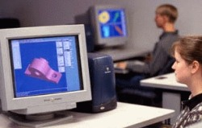

Cem Sarman
Makine Müh.
Bilgisayar Eðitmeni
MMO Ýzmir Þubesi
Þubat 2006, Ýzmir
Not: Orijinal olarak TurkCADCAM.net
Dergisi 2. Sayýsý için hazýrlanmýþ bu makale,
ilk kez Mart 2007'de TurkCADCAM.net Portalý'ndan
yayýnlanmaya baþlamýþtýr.
1997 yýlýndan beri çeþitli bilgisayar programlarýnýn dersini veriyorum. Son 3 yýldýrda bazý CAD programlarýnýn (AutoCAD ve SolidWorks) eðitimini veriyorum. Bu eðitimler sýrasýnda gözlemlediðim olumlu veya olumsuz bazý konularý sizlerle paylaþmak istedim;
Üniversitelerimizde kýsa süre öncesine kadar herhangi bir CAD programýnýn eðitimi yoktu. Birçoðunda hâla yok! CAD eðitimi olmayan üniversitelerden mezun olan insanlarýn çok küçük bir bölümü bu tip programlarý öðrenerek mezun olur. Geriye kalan büyük çoðunluk ise ya kendi kendine evinde öðrenmeye çalýþýyor yada bilgisayar kurslarýna baþvuruyor. Bu büyük çoðunluðun dýþýnda meslek alaný dýþýndan insanlar belki bir iþ bulurum ümidiyle kurslara katýlmak ve bu programlarý öðrenmek istiyorlar.
Burada kurslara büyük iþ düþüyor. Kiþileri doðru yönlendirmeli, kiþilerin temel bilgileri bu tip programlarý öðrenmeye yeterlimi? Bu deðerlendirme yapýlmalý. Yoksa teknik resmin "T" sini bilmeyen insan AutoCAD kursunu bitirdikten sonra nasýl makina parçasý çizecek? Çizdiði resmi imalata nasýl verecek? Sýrf sýnýflarý doldurmak için her isteyeni kayýt etmemek gerekiyor bence. Kursiyere kursun sonuçlarýnda olacaklarý ve kendisinde olmasý gereken alt nitelikler anlatýldýktan sonra kayýt yapýlmalý.
Ýþin birde eðitmen boyutu var! Eðitmenin niteliðini sorgulayan herhangi bir kurum yok. Bu konuda kurs yöneticileride duyarsýz. Önlerine kim gelirse anlaþabilecekleri o kiþilere kurs verdirtiyorlar. Bu konuda en büyük iþ siz kursiyerlere kalýyor. Eðer eðitimcinizden memnun deðilseniz kurs yöneticisi ile mutlaka görüþün. Çünkü o kiþiyi eðitim esnasýnda denetleyecek bir mekanizma yok.
Eðitimci performansý konusunda bence en yararlý kaynak kurs sonunda yapýlan eðitim deðerlendirme anketleri. Bu anketler her kurs dönemi sonunda mutlaka kursiyerlere doldurtulmalý; Birçok eksiðimi bu anketler sayesinde gördüm ve benim için çok faydalý olduðunu düþünüyorum.
Pekiyi, sýnýf koþullarý nasýl olmalý? En fazla 10-12 kiþilik sýnýflarda, herkesin önünde bir bilgisayar. Buraya kadar zaten tüm kurslar bu koþullarý saðlýyor. Bundan sonra eðitimci için 3 seçenek var;
- Tahtada kalem ile dersi anlatmak
- Yardýmcý bir program aracýlýðý ile kendi bilgisayarýndan diðer kursiyerlerin bilgisayarlarýný kontrol ederek, monitörlerini görerek ve kendi ekranýný onlarýn görmesini saðlayarak dersi anlatmak
- Projeksiyon ile dersi anlatmak.
Açýkçasý ben bu üç tipte de ders anlattým ama en baþarýlýsý en son söylediðim yöntem kuþkusuz. Çünkü insanlara görsel þov yapýyorsunuz ve anlattýðýnýz þeyi hemen önlerine dönüp uygulayabiliyorlar. Tabi bu son söylediðim en pahalý metot olduðu için projeksiyon cihazýný her kurs saðlayamýyor. Eðitmen projeksiyonla 1 saatte anlatacaðý konuyu diðer yöntemlerle nerdeyse 3-4 saatte anlatýyor. Bu da kurs süresini boþuna meþgul ediyor tabiki...
Kurs baþladýðý anda kursiyere eðitim dökümanlarý mutlaka verilmeli. Benim gördüðüm en saðlýklý eðitim döküman tipi kaðýda basýlmýþ, programdaki komutlarý çok detaya girmeden anlatan eðitim notlarý ve belli konularda hazýrlanmýþ video dosyalarý. Bu video dosyalarý CD olarak kurs notlarý kitabý ile beraber daðýtýlmalý. "Tüm notlarý CD'ye koyalým ordan okusun kursiyerler" dediðimizde ve gereðinden fazla eðitim notunu bu CD'lere koyduðumuzda insanlar boðuluyor, birkaç dosyaya bakýp býrakýyorlar. Ama kitapçýk haline getirilmiþ özet komutlar her zaman kiþinin elinin altýnda ve daha faydalý oluyor.
Eðitim süresine gelince, CAD programlarý uygulama yaptýkça öðrenilir. Bu yüzden kurslar haftalýk periyotlar halinde haftada 1 veya 2 gün, 4-5 ders saatini geçmemeli ve her ders sonunda bir sonraki derse kadar yapýlmasý gereken çizimler ödev olarak kursiyere verilmeli. Firmalar bazý nedenlerden dolayý 5 gün üst üste sabahtan akþama kadar eðitim düzenliyor. Ýlk iki günden sonra inanýn kursiyerler sadece dinlemeye geliyorlar ama öðrenemiyorlar. Arka arkaya günlerde ders olunca kiþiler nasýl uygulama yapacaklar? Nasýl dinlediklerini uygulayacaklar? Kursta %50 teorik anlatýlýyorsa, %50 pratik yapýlmalý. Bu kriterler eþliðinde anlatýlacak programýn temel düzey komutlarý için ne kadar zaman gerekli belirlenmeli ve kurs verilmelidir...
Ýþte iþin en can alýcý noktasý, eðitim ücreti. Projeksiyon dedik, nitelikli eðitmen dedik, herkese bilgisayar dedik, üstüne bir de kursun ucuz da olmasý gerekiyor. Öðrenciler için özel fiyatlar gerekiyor. Bunun çözümünü þöyle bulabiliriz; Kurs hangi programý öðretiyorsa o program için ileride potansiyel bir müþteri oluþturuyor demektir. Yani programlarýn ücretsiz reklamý yapýlýyor. Bu programlarýn yetkilileri kurslara eðitim lisanslarýný ücretsiz verebilirler. Hatta kendi programlarýnýn eðitimini veren kurumlara destek olabilirler. Böylece kaçak kurslarýn birçoðu kayýt altýna alýnýr. Kursiyer bilgileri talep edilebilir ve sürekli bir e-posta zinciri ile kursiyerlere ileriki zamanlarda reklam mesajlarý gönderilebilir. Tabii her kursa ücretsiz lisans verin demiyorum ama sizin þartlarýnýza uyacak nitelikteki kursalar için bu uygulanabilir.
Böylece hem kurs maliyetleri azaldýðý için kurslar ucuzlar, hem programlarýn daha saðlýklý ve kontrollü eðitimi olur hem de bu kurslara katýlan kiþilerle irtibat istenildiði zaman kurulabilir.
Özetle, herhangi bir bilgisayar kursuna katýlcaksanýz þu sorularý sormanýzý tavsiye ediyorum;
- Eðitimi kim veriyor?
- Eðitim dökümanlarý nasýl? CD veya kitap veriliyor mu?
- Sýnýfta projeksiyon var mý?
- Herkese 1 bilgisayar düþüyormu? Bilgisayarlarýn performansý program için yeterli mi?
- Eðitimini verdiðiniz program için yetkili eðitim merkezi misiniz? Eðitim lisansýnýz var mý?
- Ben (yani kursiyer adayý) bu programý öðrenmek için gerekli alt yapýya sahip miyim?
- Ücret ne kadar? Diðer kurslarla karþýlaþtýrýn, çok büyük fiyat farký varsa mutlaka þüphelenin!
- Kurs için ayrýlan süre yeterli mi?
- Uygulama nasýl yapabilirim? (Evinizde bilgisayar yoksa kursa gelip uygulama yapmayý talep edin)
Lütfen dikkatli olun ve paranýzý ve vaktinizi boþa harcamayýn... |